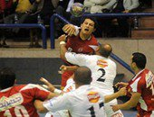
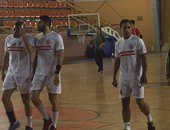
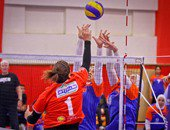
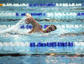

هاشتاجات الزمالك تسيطر على تويتر بعد الفوز على الأهلى فى اليد.. ومغردون: "ملوك الصالات" الجمعة، 29 أبريل 2016 - 06:03 م هاشتاجات-الزمالك-تسيطر-على-تويتر-بعد-الفوز-على-الأهلى-فى-الي/2697051#
كتب هيثم سلامة سيطرت هاشتاجات نادى الزمالك على قائمة الأكثر تغريداً على تويتر، وذلك بعد فوزه على الأهلى بنتيجة 30/28 فى نهائى اليد على صالة هيئة قناة السويس بالإسماعيلية. وهنأ العديد من جماهير القلعة البيضاء بعضهم البعض بالفوز على الأهلى ، حيث دشنوا هاشتاج يحمل اسم " ملوك الصالات" ، حيث قالت زملكاوية " اللون الأبيض لسه وهيفضل بخيره"، وأضافت أمنية علاء " الزمالك بطل كأس مصر لكره اليد فاز ضد الاهلى 28/30 ،انصرنا يارب فى كرة القدم" . هاشتاجات-الزمالك-تسيطر-على-تويتر-بعد-الفوز-على-الأهلى-فى-الي/2697051#
الزمالك فى الإسماعيلية قبل نهائى كأس كرة اليد بـ24 ساعة الإثنين، 25 أبريل 2016 - 03:51 م الزمالك-فى-الإسماعيلية-قبل-نهائى-كأس-كرة-اليد-بـ24-ساعة/2691297#
كتبت ندى مجاهد يغادر فريق كرة اليد بنادى الزمالك بقيادة مديره الفنى أيمن صلاح إلى مدينة الإسماعيلية يوم الخميس المقبل، قبل خوض نهائى الكأس المقرر له يوم الجمعة المقبل فى الثانية ظهرا على صالة هيئة قناة السويس بـ 24 ساعة. أمن شرم الشيخ يرفض استضافة نهائى كأس كرة اليد كان من المقرر أن يقام نهائى كأس كرة اليد بين ناديى الأهلى والزمالك يوم السبت الماضى، لكن أمن شرم الشيخ رفض إقامة اللقاء على صالته، خوفا من اقتحام جمهور الألتراس والوايت نايتس مما ترتب عليه تأجيل المباراة ونقلها إلى الإسماعيلية. الزمالك-فى-الإسماعيلية-قبل-نهائى-كأس-كرة-اليد-بـ24-ساعة/2691297#
اليوم.. سيدات طائرة الأهلى يصلن القاهرة بعد التتويج بلقب أفريقيا الأحد، 01 مايو 2016 - 03:00 ص اليوم-سيدات-طائرة-الأهلى-يصلن-القاهرة-بعد-التتويج-بلقب-أفريق/2698794#
كتبت ندى مجاهد تصل اليوم الأحد ، بعثة فريق سيدات الكرة الطائرة إلى القاهرة قادمة من تونس بعد التتويج بلقب البطولة الأفريقية للأندية التى اختتمت أمس بالفوز على قرطاج التونسى على أرضه 3 / 2 . تضم قائمة الفريق الأحمر فى هذه البطولة كلا من اللاعبات ،شروق فؤاد، سارة مؤمن، أية الشامى، رنا الجوهرى ،نيرمين المنشاوى إنجى الشامى ،مريم متولى، نور ياسين ،مريم مصطفى ،نهلة سامح، رحمة حسن، عواطف عاصم ،أية الشافعى والمحترفة البرازيلية تاى. اليوم-سيدات-طائرة-الأهلى-يصلن-القاهرة-بعد-التتويج-بلقب-أفريق/2698794#
المصرية مريم صقر تحقق فضية البطولة العربية للسباحة الخميس، 07 أبريل 2016 - 07:25 م المصرية-مريم-صقر-تحقق-فضية-البطولة-العربية-للسباحة/2665564#
كتب محمد ربيع حققت مريم صقر الميدالية الفضية والمركز الثانى لسباق 100 متر ظهر سيدات، فى البطولة العربية الثالثة للسباحة المقامة فى دبى بالإمارات. وجاءت المصرية أنجى أبو زيد فى المركز الثالث والميدالية البرونزية، بينما جاءت الجزائرية أمل ملاح فى المركز الأول والميدالية الذهبية. المصرية-مريم-صقر-تحقق-فضية-البطولة-العربية-للسباحة/2665564#